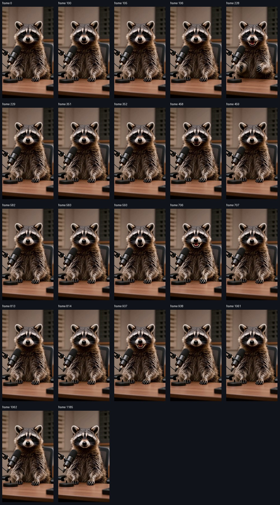
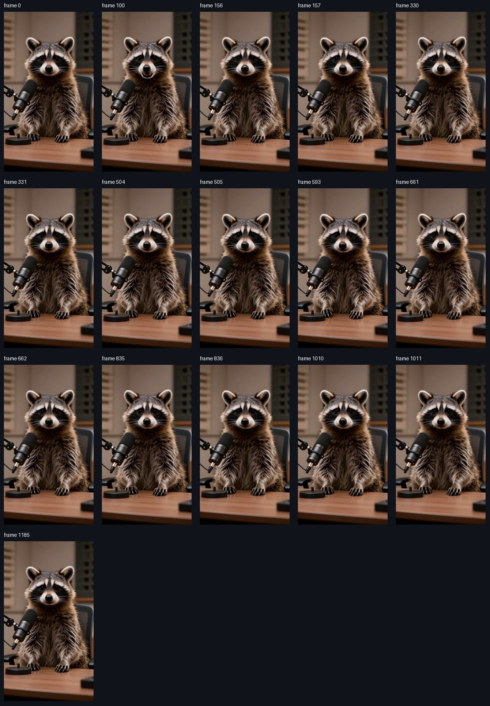
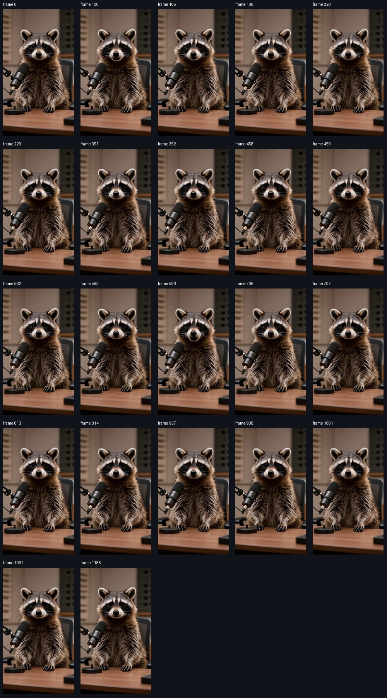

Same-image chunks on one RTX PRO 6000
What changed: Every chunk starts from the same source portrait. Hard-anchor runs also
condition each chunk's last frame on that portrait. This removes the previous-last-frame dependency and permits independent
chunk workers. The final frames are generated, not pixel-locked to the portrait, so a join can still jump.
GPU encoding first works: Encode the shared prompt/portrait on the GPU once,
prepare each chunk's audio and latents, release that process, then run workers. Two workers fit at about 72.1 GiB.
Across two runs, one worker averaged 257.5 seconds and two averaged 252.2 seconds,
giving 2.1% more videos per hour for this workload. This is a small measured gain, not a doubling.
Both workers share the single GPU's compute and memory bandwidth. Two repetitions are initial evidence; they do not establish a precise long-run speedup. All 70 cached preparation tensors were exactly equal
to the uncached GPU preparation in the
equivalence check.
Practical choice: GPU encode once, then release the encoder. Use one worker for the lower-memory option (36.4 GiB); use two workers for the fastest measured hard-anchor option (72.1 GiB), accepting nearly twice the memory for this modest gain. More worker copies do not fit the measured safety margin. Shared-VAE scheduling remains untested.
Measured results
All rows use the same 49.4-second source audio, 24 fps, two denoising steps, 1080 × 1920
output and a single RTX PRO 6000. “Videos/hour” is 3600 divided by measured timed seconds for one video.
Worker totals include all lanes, final assembly, and CPU media validation. Calibration and initial source-audio preparation/splitting are excluded. These are timed benchmark runs, not service request-to-response measurements.
GPU preparation rows also include preparation, serialization, model release, and worker startup time.
| Configuration | Time | Videos/hour | Peak VRAM | Mean GPU use | Unusual joins |
|---|
| 10 chunks · GPU encode once and release · one worker | 257.7 s | 13.97 | 36.4 GiB | 80% | 9 / 9 |
|---|
| 10 chunks · GPU encode once and release · two workers | 251.9 s | 14.29 | 72.1 GiB | 88% | 9 / 9 |
|---|
| 10 chunks · GPU prepare all and release · two workers | 271.8 s | 13.25 | 72.1 GiB | 88% | 9 / 9 |
|---|
| 10 chunks · one resident model · hard anchor | 265.5 s | 13.56 | 51.7 GiB | 84% | 9 / 9 |
|---|
| 10 chunks · fresh model process per chunk · hard anchor | 413.9 s | 8.70 | 47.4 GiB | 54% | 9 / 9 |
|---|
| 10 chunks · one resident model · anchor every 2 | 256.4 s | 14.04 | 51.7 GiB | 84% | 4 / 9 |
|---|
| 7 chunks · one resident model · hard anchor | 273.4 s | 13.17 | 55.3 GiB | 87% | 6 / 6 |
|---|
| 14 chunks · one resident model · hard anchor | 271.1 s | 13.28 | 49.6 GiB | 83% | 13 / 13 |
|---|
| 10 chunks · two resident models · CPU text · hard anchor | 754.1 s | 4.77 | 73.5 GiB | 27% | 9 / 9 |
|---|
Repeat check for the leading settings
| Ten-chunk policy | Run 1 | Run 2 | Mean time | Flagged joins on run 2 |
|---|
| Hard anchor | 265.5 s | 265.7 s | 265.6 s | 9/9 |
|---|
| Anchor every 2 | 256.4 s | 257.5 s | 257.0 s | 4/9 |
|---|
| GPU encode once · one worker | 257.7 s | 257.2 s | 257.5 s | 9/9 |
|---|
| GPU encode once · two workers | 251.9 s | 252.5 s | 252.2 s | 9/9 |
|---|
Compared with the earlier fully resident hard-anchor baseline, the periodic-anchor setting averaged 8.7 seconds faster across these two runs, about 3.3%.
This is a small sample and it changes the end-image condition on alternating chunks.
Correction to the initial full-copy experiment: CPU text encoding is not required to
fit two denoising workers. Preparing conditioning on the GPU first and releasing the encoder lets two workers fit.
The first such test peaked at 72.1 GiB and took 271.8 seconds, including 38.3 seconds of preparation. The new cache
encodes identical prompt/image inputs once and reuses that result; audio and latent preparation remain specific to each chunk.
Workers each retain a transformer and video VAE. Concurrent shared-VAE decoding is not tested here. Sampler-call overlap
is measured with synchronized wall intervals; proving simultaneous CUDA kernels requires a GPU profiler.
Quality: Every final MP4 decoded fully, contained exactly 1,186 video frames at 24 fps,
and matched source audio to 0 ms at the checker’s 8 kHz resolution. The luma join statistic is a screening signal,
not a human seam rating. Watch the videos below before deciding whether the pose resets are acceptable.
10 chunks · GPU encode once and release · one worker
257.7 seconds for a 49.4-second, 1,186-frame video; peak VRAM
36.4 GiB; mean sampled GPU utilization 80%. Inference calls overlapped for
0.0 seconds.
9 of 9 joins exceeded
the ordinary-frame 95th percentile. The audio check found 0 ms lag
and 0 ms duration difference.
Preparation, serialization and preparation-process startup took 19.4 s, included in the total above. Sampler calls overlapped for 0.0 s. Text cache: {'encoder_calls': 1, 'cache_hits': 9}.
Raw measurement JSON
Boundary contact sheet and stage timings

- model_load: 0.1 s summed across chunks
- condition_pack: 0.0 s summed across chunks
- optimizer_patch: 0.0 s summed across chunks
- generation: 127.1 s summed across chunks
- video_decode: 76.5 s summed across chunks
- crop_mux_save: 10.3 s summed across chunks
10 chunks · GPU encode once and release · two workers
251.9 seconds for a 49.4-second, 1,186-frame video; peak VRAM
72.1 GiB; mean sampled GPU utilization 88%. Inference calls overlapped for
207.2 seconds.
9 of 9 joins exceeded
the ordinary-frame 95th percentile. The audio check found 0 ms lag
and 0 ms duration difference.
Preparation, serialization and preparation-process startup took 18.7 s, included in the total above. Sampler calls overlapped for 118.0 s. Text cache: {'encoder_calls': 1, 'cache_hits': 9}.
Raw measurement JSON
Boundary contact sheet and stage timings

- model_load: 0.3 s summed across chunks
- condition_pack: 0.0 s summed across chunks
- optimizer_patch: 0.0 s summed across chunks
- generation: 258.8 s summed across chunks
- video_decode: 148.7 s summed across chunks
- crop_mux_save: 13.1 s summed across chunks
10 chunks · GPU prepare all and release · two workers
271.8 seconds for a 49.4-second, 1,186-frame video; peak VRAM
72.1 GiB; mean sampled GPU utilization 88%. Inference calls overlapped for
207.9 seconds.
9 of 9 joins exceeded
the ordinary-frame 95th percentile. The audio check found 0 ms lag
and 0 ms duration difference.
Preparation, serialization and preparation-process startup took 38.3 s, included in the total above. Sampler calls overlapped for 119.6 s. Text cache: None.
Raw measurement JSON
Boundary contact sheet and stage timings

- model_load: 0.3 s summed across chunks
- condition_pack: 0.0 s summed across chunks
- optimizer_patch: 0.0 s summed across chunks
- generation: 258.8 s summed across chunks
- video_decode: 149.6 s summed across chunks
- crop_mux_save: 13.4 s summed across chunks
10 chunks · one resident model · hard anchor
265.5 seconds for a 49.4-second, 1,186-frame video; peak VRAM
51.7 GiB; mean sampled GPU utilization 84%. Inference calls overlapped for
0.0 seconds.
9 of 9 joins exceeded
the ordinary-frame 95th percentile. The audio check found 0 ms lag
and 0 ms duration difference.
Raw measurement JSON
Boundary contact sheet and stage timings

- model_load: 0.6 s summed across chunks
- condition_pack: 29.9 s summed across chunks
- optimizer_patch: 0.0 s summed across chunks
- generation: 125.9 s summed across chunks
- video_decode: 76.3 s summed across chunks
- crop_mux_save: 10.1 s summed across chunks
10 chunks · fresh model process per chunk · hard anchor
413.9 seconds for a 49.4-second, 1,186-frame video; peak VRAM
47.4 GiB; mean sampled GPU utilization 54%. Inference calls overlapped for
0.0 seconds.
9 of 9 joins exceeded
the ordinary-frame 95th percentile. The audio check found 0 ms lag
and 0 ms duration difference.
Raw measurement JSON
Boundary contact sheet and stage timings

- model_load: 5.9 s summed across chunks
- condition_pack: 66.5 s summed across chunks
- optimizer_patch: 0.0 s summed across chunks
- generation: 147.5 s summed across chunks
- video_decode: 91.0 s summed across chunks
- crop_mux_save: 10.7 s summed across chunks
10 chunks · one resident model · anchor every 2
256.4 seconds for a 49.4-second, 1,186-frame video; peak VRAM
51.7 GiB; mean sampled GPU utilization 84%. Inference calls overlapped for
0.0 seconds.
4 of 9 joins exceeded
the ordinary-frame 95th percentile. The audio check found 0 ms lag
and 0 ms duration difference.
Raw measurement JSON
Boundary contact sheet and stage timings

- model_load: 0.6 s summed across chunks
- condition_pack: 24.5 s summed across chunks
- optimizer_patch: 0.0 s summed across chunks
- generation: 121.9 s summed across chunks
- video_decode: 76.1 s summed across chunks
- crop_mux_save: 10.4 s summed across chunks
7 chunks · one resident model · hard anchor
273.4 seconds for a 49.4-second, 1,186-frame video; peak VRAM
55.3 GiB; mean sampled GPU utilization 87%. Inference calls overlapped for
0.0 seconds.
6 of 6 joins exceeded
the ordinary-frame 95th percentile. The audio check found 0 ms lag
and 0 ms duration difference.
Raw measurement JSON
Boundary contact sheet and stage timings

- model_load: 0.6 s summed across chunks
- condition_pack: 22.3 s summed across chunks
- optimizer_patch: 0.0 s summed across chunks
- generation: 141.8 s summed across chunks
- video_decode: 77.8 s summed across chunks
- crop_mux_save: 9.3 s summed across chunks
14 chunks · one resident model · hard anchor
271.1 seconds for a 49.4-second, 1,186-frame video; peak VRAM
49.6 GiB; mean sampled GPU utilization 83%. Inference calls overlapped for
0.0 seconds.
13 of 13 joins exceeded
the ordinary-frame 95th percentile. The audio check found 0 ms lag
and 0 ms duration difference.
Raw measurement JSON
Boundary contact sheet and stage timings

- model_load: 0.6 s summed across chunks
- condition_pack: 40.2 s summed across chunks
- optimizer_patch: 0.0 s summed across chunks
- generation: 119.4 s summed across chunks
- video_decode: 75.6 s summed across chunks
- crop_mux_save: 11.4 s summed across chunks
10 chunks · two resident models · CPU text · hard anchor
754.1 seconds for a 49.4-second, 1,186-frame video; peak VRAM
73.5 GiB; mean sampled GPU utilization 27%. Inference calls overlapped for
723.5 seconds.
9 of 9 joins exceeded
the ordinary-frame 95th percentile. The audio check found 0 ms lag
and 0 ms duration difference.
Raw measurement JSON
Boundary contact sheet and stage timings

- model_load: 1.6 s summed across chunks
- condition_pack: 1090.9 s summed across chunks
- optimizer_patch: 0.0 s summed across chunks
- generation: 228.2 s summed across chunks
- video_decode: 125.5 s summed across chunks
- crop_mux_save: 13.5 s summed across chunks
Scope: The original leading two settings and both GPU-encode-once settings have two complete runs each; other rows have one
run each. GPU preparation workers calibrate two longest chunks to check warm memory use; older workers calibrated one chunk.
This report measures only one GPU and makes no eight-GPU speedup claim. The runnable
supervisors and raw JSON are in the local script2video benchmark directory.